EDA
4 weeks by kdh
Table of Contents
- 1. EDA(탐색적 데이터분석)
- 1.1. 설치하라고 에러가 뜬다.
- 1.2. 데이터셋의 헤드를 읽어서 시작라인 번호를 확인해본다.
- 1.3. 어떤 칼럼들이 있는지 확인해둔다.
- 1.4. 데이터셋의 끝 번호도 확인해둔다.
- 1.5. 비워져있는 데이터들에 대한 정보도 확인해본다.
- 1.6. 통계정보 확인해본다.
- 1.7. null 값에 대한 정보는 매우! 중요하다.
- 1.8. cabin내에 있는 NaN 값을 해결해보자
- 1.9. 나이값이 뭔가 중요해보인다. 나이값의 결측치에 대해 처리해보자.
- 1.10. 승선한 항구에 대한 결측치 처리
- 1.11. drop()안 inplace 파라메터에 True를 넣으면 실제 데이터를 없앤다.
- 1.12. fare(요금)의 결측치 처리
- 1.13. cabin컬럼값을 cabin값의 첫 글자로 바꾼다.
- 1.14. 성별 카운트들과 승선항구 카운트들을 구경해본다.
- 1.15. seaborn 설치
- 1.16. seaborn: 차트그리는 패키지
- 1.17. 차트 설정
- 1.18. factorplot으로 차트그리기
- 1.19. 히스토그램으로 출력해보자.
- 1.20. catplot, distplot, lmplot으로 다른 데이터들도 출력해보자.
- 1.21. 학습시킬때는 범주형(female, male등과 같은것을) 수치로 변환시켜놓아야 알고리즘 적용시키기 수월하다(?)
- 1.22. 위의 과정들은 데이터 전처리과정이다. (결측치 해결)
- 1.23. 전처리과정이 끝나면 준비된 알고리즘(ex. DecisionTree)에 실제 적용해본다.
1 EDA(탐색적 데이터분석)
타이타닉 생존자 데이터셋은 캐글에서 제공하는 것이다. 이 데이터셋을 가지고 여러 알고리즘을 적용해서 높은 예측률을 나타내는 알고리즘을 찾아내는데 사용되기도 한다.(캐글) 오늘은 이 데이터셋을 가지고 탐색적 데이터분석을 적용해보려고 한다.
1.1 설치하라고 에러가 뜬다.
pip install xlrd
1.2 데이터셋의 헤드를 읽어서 시작라인 번호를 확인해본다.
# 데이터프레임을 이용하기 위하여 pandas 패키지를 임포트한다.
import pandas as pd
# 구글에서 받은 타이타닉호 관련 데이터를 읽어들인다.
df_train = pd.read_excel('./data/titanic3.xls')
df_train.head(10)
pclass survived name sex \ 0 1 1 Allen, Miss. Elisabeth Walton female 1 1 1 Allison, Master. Hudson Trevor male 2 1 0 Allison, Miss. Helen Loraine female 3 1 0 Allison, Mr. Hudson Joshua Creighton male 4 1 0 Allison, Mrs. Hudson J C (Bessie Waldo Daniels) female 5 1 1 Anderson, Mr. Harry male 6 1 1 Andrews, Miss. Kornelia Theodosia female 7 1 0 Andrews, Mr. Thomas Jr male 8 1 1 Appleton, Mrs. Edward Dale (Charlotte Lamson) female 9 1 0 Artagaveytia, Mr. Ramon male age sibsp parch ticket fare cabin embarked boat body \ 0 29.0000 0 0 24160 211.3375 B5 S 2 NaN 1 0.9167 1 2 113781 151.5500 C22 C26 S 11 NaN 2 2.0000 1 2 113781 151.5500 C22 C26 S NaN NaN 3 30.0000 1 2 113781 151.5500 C22 C26 S NaN 135.0 4 25.0000 1 2 113781 151.5500 C22 C26 S NaN NaN 5 48.0000 0 0 19952 26.5500 E12 S 3 NaN 6 63.0000 1 0 13502 77.9583 D7 S 10 NaN 7 39.0000 0 0 112050 0.0000 A36 S NaN NaN 8 53.0000 2 0 11769 51.4792 C101 S D NaN 9 71.0000 0 0 PC 17609 49.5042 NaN C NaN 22.0 home.dest 0 St Louis, MO 1 Montreal, PQ / Chesterville, ON 2 Montreal, PQ / Chesterville, ON 3 Montreal, PQ / Chesterville, ON 4 Montreal, PQ / Chesterville, ON 5 New York, NY 6 Hudson, NY 7 Belfast, NI 8 Bayside, Queens, NY 9 Montevideo, Uruguay
1.3 어떤 칼럼들이 있는지 확인해둔다.
df_train.columns
Index(['pclass', 'survived', 'name', 'sex', 'age', 'sibsp', 'parch', 'ticket', 'fare', 'cabin', 'embarked', 'boat', 'body', 'home.dest'], dtype='object')
1.4 데이터셋의 끝 번호도 확인해둔다.
df_train.tail(3)
pclass survived name sex age sibsp parch \ 1306 3 0 Zakarian, Mr. Mapriededer male 26.5 0 0 1307 3 0 Zakarian, Mr. Ortin male 27.0 0 0 1308 3 0 Zimmerman, Mr. Leo male 29.0 0 0 ticket fare cabin embarked boat body home.dest 1306 2656 7.225 NaN C NaN 304.0 NaN 1307 2670 7.225 NaN C NaN NaN NaN 1308 315082 7.875 NaN S NaN NaN NaN
1.5 비워져있는 데이터들에 대한 정보도 확인해본다.
나이(1046), fare요금(1308) 누락된 한명에 대해서 궁금증을 가져본다.
df_train.info()
<class 'pandas.core.frame.DataFrame'> RangeIndex: 1309 entries, 0 to 1308 Data columns (total 14 columns):
— -–— ---------–— –— 0 pclass 1309 non-null int64 1 survived 1309 non-null int64 2 name 1309 non-null object 3 sex 1309 non-null object 4 age 1046 non-null float64 5 sibsp 1309 non-null int64 6 parch 1309 non-null int64 7 ticket 1309 non-null object 8 fare 1308 non-null float64 9 cabin 295 non-null object 10 embarked 1307 non-null object 11 boat 486 non-null object 12 body 121 non-null float64 13 home.dest 745 non-null object dtypes: float64(3), int64(4), object(7) memory usage: 143.3+ KB
1.6 통계정보 확인해본다.
df_train.describe()
pclass survived age sibsp parch \ count 1309.000000 1309.000000 1046.000000 1309.000000 1309.000000 mean 2.294882 0.381971 29.881135 0.498854 0.385027 std 0.837836 0.486055 14.413500 1.041658 0.865560 min 1.000000 0.000000 0.166700 0.000000 0.000000 25% 2.000000 0.000000 21.000000 0.000000 0.000000 50% 3.000000 0.000000 28.000000 0.000000 0.000000 75% 3.000000 1.000000 39.000000 1.000000 0.000000 max 3.000000 1.000000 80.000000 8.000000 9.000000 fare body count 1308.000000 121.000000 mean 33.295479 160.809917 std 51.758668 97.696922 min 0.000000 1.000000 25% 7.895800 72.000000 50% 14.454200 155.000000 75% 31.275000 256.000000 max 512.329200 328.000000
1.7 null 값에 대한 정보는 매우! 중요하다.
null값에 대한 정보가 왜곡되기 쉽다. ticket fare cabin embarked boat body home.dest 1306 2656 7.225 NaN C NaN 304.0 NaN 1307 2670 7.225 NaN C NaN NaN NaN 1308 315082 7.875 NaN S NaN NaN NaN
이 데이터셋에선 null값이 NaN으로 표시되어있다. 앞으로 null값을 결측치라고 명명한다. 널값에 대한 걸 어떻게 처리할지 정해나가야 한다.
df_train.isnull().sum()
pclass 0 survived 0 name 0 sex 0 age 263 sibsp 0 parch 0 ticket 0 fare 1 cabin 1014 embarked 2 boat 823 body 1188 home.dest 564 dtype: int64
1.8 cabin내에 있는 NaN 값을 해결해보자
fillna(str)는 널값을 str로 채운다.
df_train['cabin'] = df_train['cabin'].fillna('N')
df_train['cabin']
0 B5 1 C22 C26 2 C22 C26 3 C22 C26 4 C22 C26 ... 1304 N 1305 N 1306 N 1307 N 1308 N Name: cabin, Length: 1309, dtype: object
1.9 나이값이 뭔가 중요해보인다. 나이값의 결측치에 대해 처리해보자.
나이가 NaN인 값(263명)을 어떻게 할 것인가.. 0으로 할 것인가 평균으로 할 것인가.. 등등 결정해야 한다. competition에서는 다 있진 않으나 Mrs., Miss., Mr. 이것을 이용해서 Mrs의 평균, Mr의 평균 등등 을 활용하는 것에 많은 지지를 받았다. 하나의 방법이다. 나라면??
df_train['age'] = df_train['age'].fillna(df_train['age'].mean()) df_train['age']
0 29.000000 1 0.916700 2 2.000000 3 30.000000 4 25.000000 ... 1304 14.500000 1305 29.881135 1306 26.500000 1307 27.000000 1308 29.000000 Name: age, Length: 1309, dtype: float64
1.10 승선한 항구에 대한 결측치 처리
df_train['embarked'] = df_train['embarked'].fillna('S')
1.11 drop()안 inplace 파라메터에 True를 넣으면 실제 데이터를 없앤다.
False로 하면 실제 데이터에 손을 안되고 드랍시킨 데이터를 return값으로 준다.
df_train_modified = df_train.drop(['boat'], axis='columns', inplace=False) df_train_modified.drop(['body'], axis='columns', inplace=True) df_train_modified.drop(['home.dest'], axis='columns', inplace=True)
1.12 fare(요금)의 결측치 처리
df_train_modified['fare'] = df_train_modified['fare'].fillna(0) df_train_modified.head()
pclass survived name sex \ 0 1 1 Allen, Miss. Elisabeth Walton female 1 1 1 Allison, Master. Hudson Trevor male 2 1 0 Allison, Miss. Helen Loraine female 3 1 0 Allison, Mr. Hudson Joshua Creighton male 4 1 0 Allison, Mrs. Hudson J C (Bessie Waldo Daniels) female age sibsp parch ticket fare cabin embarked 0 29.0000 0 0 24160 211.3375 B5 S 1 0.9167 1 2 113781 151.5500 C22 C26 S 2 2.0000 1 2 113781 151.5500 C22 C26 S 3 30.0000 1 2 113781 151.5500 C22 C26 S 4 25.0000 1 2 113781 151.5500 C22 C26 S
1.13 cabin컬럼값을 cabin값의 첫 글자로 바꾼다.
df_train_modified['cabin'] = df_train_modified['cabin'].apply(lambda x: x[0]) df_train_modified['cabin'].value_counts()
N 1014 C 94 B 65 D 46 E 41 A 22 F 21 G 5 T 1 Name: cabin, dtype: int64
1.14 성별 카운트들과 승선항구 카운트들을 구경해본다.
df_train_modified['sex'].value_counts()
male 843 female 466 Name: sex, dtype: int64
df_train_modified['embarked'].value_counts()
S 916 C 270 Q 123 Name: embarked, dtype: int64
1.15 seaborn 설치
pip install seaborn
1.16 seaborn: 차트그리는 패키지
import matplotlib.pyplot as plt import seaborn as sns
1.17 차트 설정
sns.set_style('darkgrid')
sns.set_palette(sns.color_palette('Set2', 10))
1.18 factorplot으로 차트그리기
catplot 으로 바뀌었고, parameter가 좀 바뀐것 같다. Warning 메세지보고 좀 수정했다. Document 나중에 확인해보자.
sns.catplot(x='sex', kind='count', data=df_train_modified)
<seaborn.axisgrid.FacetGrid at 0x7f93d8f35048>
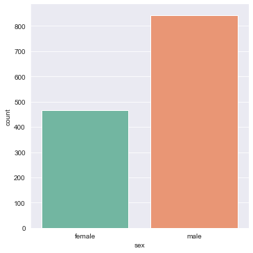
sns.catplot(x='pclass', kind='count', data=df_train_modified)
<seaborn.axisgrid.FacetGrid at 0x7f93d8d2ec18>
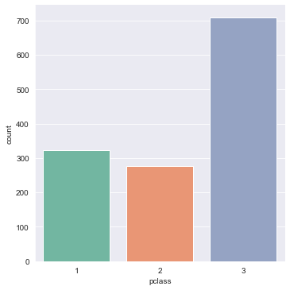
1.19 히스토그램으로 출력해보자.
df_train_modified['age'].hist()
<AxesSubplot:>
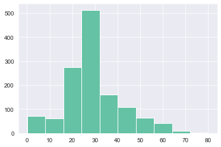
1.20 catplot, distplot, lmplot으로 다른 데이터들도 출력해보자.
인라인함수도 쓸수있다.(다시 볼것!)
sns.catplot(x='cabin', kind='count', data=df_train_modified)
<seaborn.axisgrid.FacetGrid at 0x7f93d5765b38>
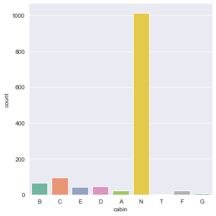
sns.catplot(x='cabin', kind='count', data=df_train_modified[df_train_modified['cabin']!='N'])
<seaborn.axisgrid.FacetGrid at 0x7f93d8f9f128>
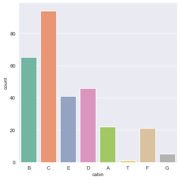
sns.catplot(x='embarked', kind='count', data=df_train_modified)
<seaborn.axisgrid.FacetGrid at 0x7f93d8e85cc0>
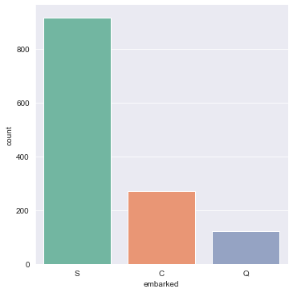
sns.catplot(x='survived', kind='count', hue='sex', data=df_train_modified)
<seaborn.axisgrid.FacetGrid at 0x7f93d94f7438>
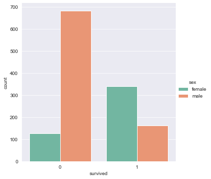
sns.catplot(x='pclass', kind='count', hue='survived', data=df_train_modified)
<seaborn.axisgrid.FacetGrid at 0x7f93d94e8a90>
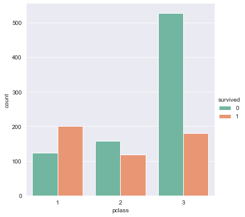
sns.catplot(x='sex', kind='count', hue='survived', data=df_train_modified)
<seaborn.axisgrid.FacetGrid at 0x7f93d98ef4e0>
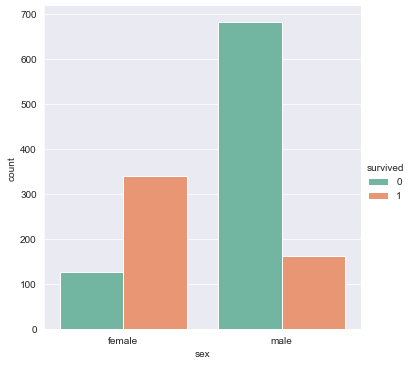
sns.distplot(df_train_modified['age'][df_train_modified['sex']=='male'])
<AxesSubplot:xlabel='age', ylabel='Density'>
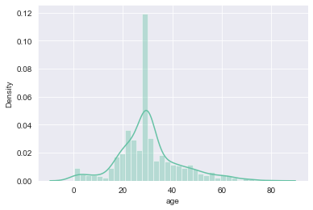
sns.displot(df_train_modified['age'][df_train_modified['sex']=='female'])
<seaborn.axisgrid.FacetGrid at 0x7f93d9aaa278>
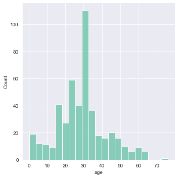
sns.lmplot('age', 'survived', hue='sex', data=df_train_modified)
<seaborn.axisgrid.FacetGrid at 0x7f93d9d71908>
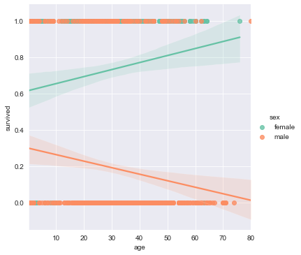
sns.catplot(x='age', kind='count', hue='survived', data=df_train_modified)
<seaborn.axisgrid.FacetGrid at 0x7f93d99015c0>
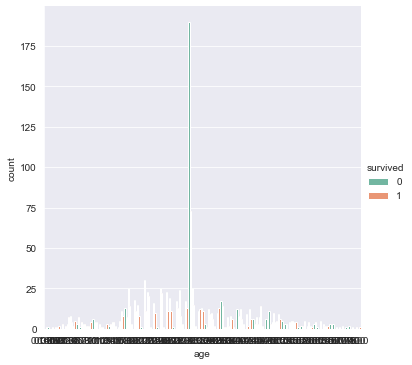
sns.catplot(x='age', kind='count', hue='survived', data=df_train_modified[df_train_modified['age'] < 6])
<seaborn.axisgrid.FacetGrid at 0x7f93da2b6f28>
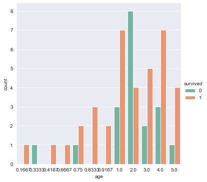
sns.catplot(x='age', kind='count', hue='survived', data=df_train_modified[df_train_modified['age'] > 70])
<seaborn.axisgrid.FacetGrid at 0x7f93d94ee748>
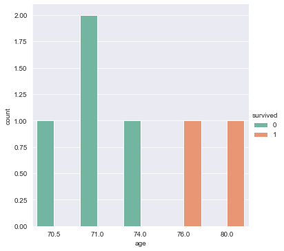
sns.catplot(x='embarked', kind='count', hue='survived', data=df_train_modified)
<seaborn.axisgrid.FacetGrid at 0x7f93db19def0>
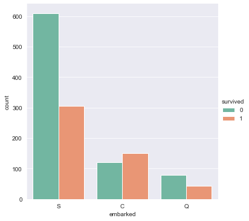
sns.catplot(x='cabin', kind='count', hue='survived', data=df_train_modified)
<seaborn.axisgrid.FacetGrid at 0x7f93da2aae48>
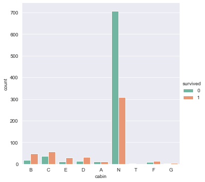
sns.lmplot(x='sibsp', y='survived', hue='sex', data=df_train_modified)
<seaborn.axisgrid.FacetGrid at 0x7f93db4c0278>
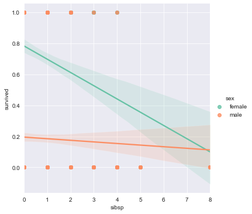
sns.lmplot(x='parch', y='survived', hue='sex', data=df_train_modified)
<seaborn.axisgrid.FacetGrid at 0x7f93db5beef0>
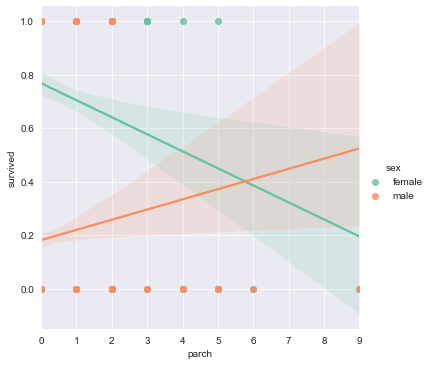
df_train_modified['family_size'] = df_train_modified['sibsp'] + df_train_modified['parch'] df_train_modified.head()
pclass survived name sex \ 0 1 1 Allen, Miss. Elisabeth Walton female 1 1 1 Allison, Master. Hudson Trevor male 2 1 0 Allison, Miss. Helen Loraine female 3 1 0 Allison, Mr. Hudson Joshua Creighton male 4 1 0 Allison, Mrs. Hudson J C (Bessie Waldo Daniels) female age sibsp parch ticket fare cabin embarked family_size 0 29.0000 0 0 24160 211.3375 B S 0 1 0.9167 1 2 113781 151.5500 C S 3 2 2.0000 1 2 113781 151.5500 C S 3 3 30.0000 1 2 113781 151.5500 C S 3 4 25.0000 1 2 113781 151.5500 C S 3
1.21 학습시킬때는 범주형(female, male등과 같은것을) 수치로 변환시켜놓아야 알고리즘 적용시키기 수월하다(?)
df_train_modified_2 = df_train_modified[['pclass', 'sex', 'age', 'sibsp', 'parch', 'fare']] df_train_modified_2.head(20)
pclass sex age sibsp parch fare 0 1 female 29.000000 0 0 211.3375 1 1 male 0.916700 1 2 151.5500 2 1 female 2.000000 1 2 151.5500 3 1 male 30.000000 1 2 151.5500 4 1 female 25.000000 1 2 151.5500 5 1 male 48.000000 0 0 26.5500 6 1 female 63.000000 1 0 77.9583 7 1 male 39.000000 0 0 0.0000 8 1 female 53.000000 2 0 51.4792 9 1 male 71.000000 0 0 49.5042 10 1 male 47.000000 1 0 227.5250 11 1 female 18.000000 1 0 227.5250 12 1 female 24.000000 0 0 69.3000 13 1 female 26.000000 0 0 78.8500 14 1 male 80.000000 0 0 30.0000 15 1 male 29.881135 0 0 25.9250 16 1 male 24.000000 0 1 247.5208 17 1 female 50.000000 0 1 247.5208 18 1 female 32.000000 0 0 76.2917 19 1 male 36.000000 0 0 75.2417
df_train_modified_2['sex'] = df_train_modified_2['sex'].map({'female':0, 'male':1})
df_train_modified_2.head(10)
pclass sex age sibsp parch fare 0 1 0 29.0000 0 0 211.3375 1 1 1 0.9167 1 2 151.5500 2 1 0 2.0000 1 2 151.5500 3 1 1 30.0000 1 2 151.5500 4 1 0 25.0000 1 2 151.5500 5 1 1 48.0000 0 0 26.5500 6 1 0 63.0000 1 0 77.9583 7 1 1 39.0000 0 0 0.0000 8 1 0 53.0000 2 0 51.4792 9 1 1 71.0000 0 0 49.5042
df_train_modified_2.info
<bound method DataFrame.info of pclass sex age sibsp parch fare 0 1 0 29.000000 0 0 211.3375 1 1 1 0.916700 1 2 151.5500 2 1 0 2.000000 1 2 151.5500 3 1 1 30.000000 1 2 151.5500 4 1 0 25.000000 1 2 151.5500 ... ... ... ... ... ... ... 1304 3 0 14.500000 1 0 14.4542 1305 3 0 29.881135 1 0 14.4542 1306 3 1 26.500000 0 0 7.2250 1307 3 1 27.000000 0 0 7.2250 1308 3 1 29.000000 0 0 7.8750 [1309 rows x 6 columns]>
df_train_modified_2.info()
<class 'pandas.core.frame.DataFrame'> RangeIndex: 1309 entries, 0 to 1308 Data columns (total 6 columns):
— -–— ---------–— –— 0 pclass 1309 non-null int64 1 sex 1309 non-null int64 2 age 1309 non-null float64 3 sibsp 1309 non-null int64 4 parch 1309 non-null int64 5 fare 1309 non-null float64 dtypes: float64(2), int64(4) memory usage: 61.5 KB
1.22 위의 과정들은 데이터 전처리과정이다. (결측치 해결)
인간이 해야할 과정이다.
1.23 전처리과정이 끝나면 준비된 알고리즘(ex. DecisionTree)에 실제 적용해본다.
DecisionTree는 결과값이 왜 이렇게 나온지를 설명하기에 좋은 화이트박스형 알고리즘이다.